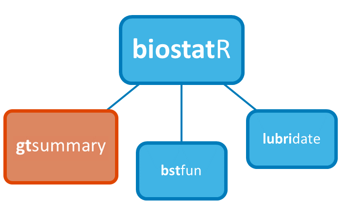
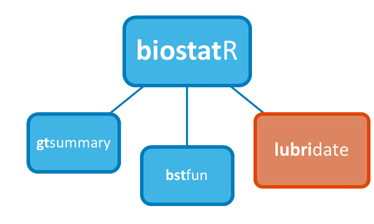
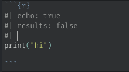

Intro to {biostatR}
(And a Few R Markdown/Quarto Tips!)
Karissa Whiting
Research Biostatistician
Memorial Sloan Kettering
Agenda
{biostatR}
Intro & Installation
Component Packages
- {gtsummary}
- {lubridate}
- {bstfun}
Extra Features
R Markdown & Quarto
- R Markdown Advanced Tips
- Quarto
{biostatR}: The ‘tidyverse’ of Analytic Reporting
{biostatR} is a set of packages to help you create and customize analysis reports
Installs and loads 3 useful packages
Also installs (without loading) additional packages to improve your workflow (meaning you’ll need to load these ‘extra packages’ explicitly with
library()).

Install {biostatR}
Install {biostatR}
- Set up MSK RStudio Package Manager:
Run the following installation code outside of an RStudio project (you only need to do this once!)
Install {biostatR}
- Set up MSK RStudio Package Manager:
Run the following installation code outside of an RStudio project (you only need to do this once!)
install.packages("rstudio.prefs")
rstudio.prefs::use_rstudio_secondary_repo(
MSK_RSPM = "http://rspm.mskcc.org/MSKREPO/latest"
)- Install {biostatR} From RSPM
Three Main Component Packages
Three Main Component Packages
- {gtsummary} - Tools for creating publication-ready statistical summary tables

Three Main Component Packages
{gtsummary} - Tools for creating publication-ready statistical summary tables
{bstfun} - A miscellaneous collection of functions for our department

Three Main Component Packages
{gtsummary} - Tools for creating publication-ready statistical summary tables
{bstfun} - A miscellaneous collection of functions for our department
{lubridate} - Tools to work with date-times in R

{gtsummary} overview
- Create tabular summaries including:
- “Table 1”
- Cross-tabulation
- Regression models summaries
- Survival data summaries
- Report statistics from {gtsummary} tables inline in R Markdown
- Stack or merge any table type
- Use themes to standardize across tables
- Choose from different print engines

Basic tbl_summary()
| Characteristic | N = 2001 |
|---|---|
| Age | 47 (38, 57) |
| Unknown | 11 |
| Grade | |
| I | 68 (34%) |
| II | 68 (34%) |
| III | 64 (32%) |
| Tumor Response | 61 (32%) |
| Unknown | 7 |
| 1 Median (IQR); n (%) | |
Four types of summaries:
continuous,continuous2,categorical, anddichotomousVariables coded
0/1,TRUE/FALSE,Yes/Notreated as dichotomousStatistics are
median (IQR)for continuous,n (%)for categorical/dichotomousLists
NAvalues under “Unknown”Label attributes are printed automatically
Customize tbl_summary() Using Arguments
| Characteristic | Drug A, N = 981 | Drug B, N = 1021 |
|---|---|---|
| Age | ||
| Mean (SD) | 47.0 (14.7) | 47.4 (14.0) |
| Range | 6.0, 78.0 | 9.0, 83.0 |
| Unknown | 7 | 4 |
| Pathologic tumor grade | ||
| I | 35 (36%) | 33 (32%) |
| II | 32 (33%) | 36 (35%) |
| III | 31 (32%) | 33 (32%) |
| Tumor Response | 28 / 95 (29%) | 33 / 98 (34%) |
| Unknown | 3 | 4 |
| 1 n (%); n / N (%) | ||
Customize tbl_summary() Using Arguments
| Characteristic | Drug A, N = 981 | Drug B, N = 1021 |
|---|---|---|
| Age | ||
| Mean (SD) | 47.0 (14.7) | 47.4 (14.0) |
| Range | 6.0, 78.0 | 9.0, 83.0 |
| Unknown | 7 | 4 |
| Pathologic tumor grade | ||
| I | 35 (36%) | 33 (32%) |
| II | 32 (33%) | 36 (35%) |
| III | 31 (32%) | 33 (32%) |
| Tumor Response | 28 / 95 (29%) | 33 / 98 (34%) |
| Unknown | 3 | 4 |
| 1 n (%); n / N (%) | ||
by: specifies a column variable for cross-tabulationtype: specifies the summary typestatistic: customize the reported statisticslabel: change or customize variable labelsdigits: specify the number of decimal places for rounding
{gtsummary} + formulas

Customize Using Add-on Functions
Summary tables can be further updated using helper functions:
add_*() add additional column of statistics or information, e.g. p-values, q-values, overall statistics, treatment differences, N obs., and more
modify_*() modify table headers, spanning headers, footnotes, and more
bold_()/italicize_() style labels, variable levels, significant p-values
Update tbl_summary() with add_*()
| Characteristic | Drug A, N = 981 | Drug B, N = 1021 | p-value2 | q-value3 |
|---|---|---|---|---|
| Age | 46 (37, 59) | 48 (39, 56) | 0.7 | 0.9 |
| Unknown | 7 | 4 | ||
| Grade | 0.9 | 0.9 | ||
| I | 35 (36%) | 33 (32%) | ||
| II | 32 (33%) | 36 (35%) | ||
| III | 31 (32%) | 33 (32%) | ||
| Tumor Response | 28 (29%) | 33 (34%) | 0.5 | 0.9 |
| Unknown | 3 | 4 | ||
| 1 Median (IQR); n (%) | ||||
| 2 Wilcoxon rank sum test; Pearson’s Chi-squared test | ||||
| 3 False discovery rate correction for multiple testing | ||||
add_p(): adds a column of p-valuesadd_q(): adds a column of p-values adjusted for multiple comparisons through a call top.adjust()
Update tbl_summary() with add_*()
| Characteristic | N | Overall, N = 200 | Drug A, N = 98 | Drug B, N = 102 |
|---|---|---|---|---|
| Age, Median (IQR) | 189 | 47 (38, 57) | 46 (37, 59) | 48 (39, 56) |
| Grade, No. (%) | 200 | |||
| I | 68 (34%) | 35 (36%) | 33 (32%) | |
| II | 68 (34%) | 32 (33%) | 36 (35%) | |
| III | 64 (32%) | 31 (32%) | 33 (32%) | |
| Tumor Response, No. (%) | 193 | 61 (32%) | 28 (29%) | 33 (34%) |
add_overall(): adds a column of overall statisticsadd_n(): adds a column with the sample sizeadd_stat_label(): adds a description of the reported statistic
Update with bold_*() or italicize_*()
| Characteristic | Drug A, N = 981 | Drug B, N = 1021 | p-value2 |
|---|---|---|---|
| Age | 46 (37, 59) | 48 (39, 56) | 0.7 |
| Unknown | 7 | 4 | |
| Grade | 0.9 | ||
| I | 35 (36%) | 33 (32%) | |
| II | 32 (33%) | 36 (35%) | |
| III | 31 (32%) | 33 (32%) | |
| Tumor Response | 28 (29%) | 33 (34%) | 0.5 |
| Unknown | 3 | 4 | |
| 1 Median (IQR); n (%) | |||
| 2 Wilcoxon rank sum test; Pearson’s Chi-squared test | |||
bold_labels(): bold the variable labelsitalicize_levels(): italicize the variable levelsbold_p(): bold p-values according a specified threshold
Update tbl_summary() with modify_*()
| Characteristic | Drug | |
|---|---|---|
| Group A1 | Group B1 | |
| Age | 46 (37, 59) | 48 (39, 56) |
| Grade | ||
| I | 35 (36%) | 33 (32%) |
| II | 32 (33%) | 36 (35%) |
| III | 31 (32%) | 33 (32%) |
| Tumor Response | 28 (29%) | 33 (34%) |
| 1 median (IQR) for continuous; n (%) for categorical | ||
- Use
show_header_names()to see the internal header names available for use inmodify_header()
Customize Using Add-on Functions
Many more customization available!
See the documentation at http://www.danieldsjoberg.com/gtsummary/reference/index.html
And a detailed tbl_summary() vignette at http://www.danieldsjoberg.com/gtsummary/articles/tbl_summary.html
Quick Code Exercise
1. Create new data frame (new_trial) and select columns age, stage, response, marker
2. Make a basic tbl_summary() summarizing by response variable and add the following customization:
For
agemakestatisticreport the"{mean} ({min}, {max})"Use
missingarg to remove display of missing values
3. Now apply the following customization:
add a p-value
bold labels and p-values ≤ .05, italicize levels
add an ‘overall’ column
See documentation for help: https://www.danieldsjoberg.com/gtsummary/
Quick Code Exercise
1. Create new data frame (new_trial) and select columns age, stage, response, marker
2. Make a basic tbl_summary() summarizing by response variable and add the following customization:
For
agemakestatisticreport the"{mean} ({min}, {max})"Use
missingarg to remove display of missing values
3. Now apply the following customization:
add a p-value
bold labels and p-values ≤ .05, italicize levels
add an ‘overall’ column
Quick Code Exercise
1. Create new data frame (new_trial) and select columns age, stage, response, marker
2. Make a basic tbl_summary() summarizing by response variable and add the following customization:
For
agemakestatisticreport the"{mean} ({min}, {max})"Use
missingarg to remove display of missing values
3. Now apply the following customization:
add a p-value
bold labels and p-values ≤ .05, italicize levels
add an ‘overall’ column
new_trial <- select(trial, age, stage, response, marker)
new_trial %>%
tbl_summary(by = response,
statistic = age ~ "{mean} ({min}, {max})",
missing = "no")| Characteristic | 0, N = 1321 | 1, N = 611 |
|---|---|---|
| Age | 46 (6, 83) | 50 (9, 78) |
| T Stage | ||
| T1 | 34 (26%) | 18 (30%) |
| T2 | 39 (30%) | 13 (21%) |
| T3 | 25 (19%) | 15 (25%) |
| T4 | 34 (26%) | 15 (25%) |
| Marker Level (ng/mL) | 0.59 (0.21, 1.24) | 0.98 (0.31, 1.53) |
| 1 Mean (Range); n (%); Median (IQR) | ||
Quick Code Exercise
1. Create new data frame (new_trial) and select columns age, stage, response, marker
2. Make a basic tbl_summary() summarizing by response variable and add the following customization:
For
agemakestatisticreport the"{mean} ({min}, {max})"Use
missingarg to remove display of missing values
3. Now apply the following customization:
add a p-value
bold labels and p-values ≤ .05, italicize levels
add an ‘overall’ column
new_trial <- select(trial, age, stage, response, marker)
new_trial %>%
tbl_summary(by = response,
statistic = age ~ "{mean} ({min}, {max})",
missing = "no") %>%
add_p() %>%
bold_labels() %>%
bold_p() %>%
italicize_levels() %>%
add_overall() | Characteristic | Overall, N = 1931 | 0, N = 1321 | 1, N = 611 | p-value2 |
|---|---|---|---|---|
| Age | 47 (6, 83) | 46 (6, 83) | 50 (9, 78) | 0.091 |
| T Stage | 0.6 | |||
| T1 | 52 (27%) | 34 (26%) | 18 (30%) | |
| T2 | 52 (27%) | 39 (30%) | 13 (21%) | |
| T3 | 40 (21%) | 25 (19%) | 15 (25%) | |
| T4 | 49 (25%) | 34 (26%) | 15 (25%) | |
| Marker Level (ng/mL) | 0.62 (0.22, 1.38) | 0.59 (0.21, 1.24) | 0.98 (0.31, 1.53) | 0.10 |
| 1 Mean (Range); n (%); Median (IQR) | ||||
| 2 Wilcoxon rank sum test; Pearson’s Chi-squared test | ||||
Survival outcomes with tbl_survfit()
library(survival)
fit <- survfit(Surv(ttdeath, death) ~ trt, trial)
tbl_survfit(
fit,
times = c(12, 24),
label_header = "**{time} Month**"
) %>%
add_p()| Characteristic | 12 Month | 24 Month | p-value1 |
|---|---|---|---|
| Chemotherapy Treatment | 0.2 | ||
| Drug A | 91% (85%, 97%) | 47% (38%, 58%) | |
| Drug B | 86% (80%, 93%) | 41% (33%, 52%) | |
| 1 Log-rank test | |||
Model Summaries with tbl_regression()
m1 <- glm(
response ~ age + stage,
data = trial,
family = binomial(link = "logit")
)
tbl_regression(
m1,
exponentiate = TRUE
) %>%
add_global_p() | Characteristic | OR1 | 95% CI1 | p-value |
|---|---|---|---|
| Age | 1.02 | 1.00, 1.04 | 0.087 |
| T Stage | 0.6 | ||
| T1 | — | — | |
| T2 | 0.58 | 0.24, 1.37 | |
| T3 | 0.94 | 0.39, 2.28 | |
| T4 | 0.79 | 0.33, 1.90 | |
| 1 OR = Odds Ratio, CI = Confidence Interval | |||
Univariate models with tbl_uvregression()
tbl_uvreg <- sm_trial %>%
tbl_uvregression(
method = glm,
y = response,
method.args = list(family = binomial),
exponentiate = TRUE
) %>%
bold_labels()
tbl_uvreg| Characteristic | N | OR1 | 95% CI1 | p-value |
|---|---|---|---|---|
| Chemotherapy Treatment | 193 | |||
| Drug A | — | — | ||
| Drug B | 1.21 | 0.66, 2.24 | 0.5 | |
| Age | 183 | 1.02 | 1.00, 1.04 | 0.10 |
| Grade | 193 | |||
| I | — | — | ||
| II | 0.95 | 0.45, 2.00 | 0.9 | |
| III | 1.10 | 0.52, 2.29 | 0.8 | |
| 1 OR = Odds Ratio, CI = Confidence Interval | ||||
Specify model
method,method.args, and theresponsevariableArguments and helper functions like
exponentiate,bold_*(),add_global_p()can also be used withtbl_uvregression()
{bstfun}
A shared space for department members to add functions that may be useful to others
Houses individual member’s project templates and function to start projects (
create_bst_project(): will be discussed in further training)Diverse functions for various analysis-related tasks, {bstfun} Reference Index: https://www.danieldsjoberg.com/bstfun/reference/index.html
{bstfun} Useful Functions
{bstfun} Useful Functions
style_tbl_compact()
Before:
| trt | age | marker | stage | grade | response | death | ttdeath |
|---|---|---|---|---|---|---|---|
| Drug A | 23 | 0.160 | T1 | II | 0 | 0 | 24.00 |
| Drug B | 9 | 1.107 | T2 | I | 1 | 0 | 24.00 |
| Drug A | 31 | 0.277 | T1 | II | 0 | 0 | 24.00 |
| Drug A | NA | 2.067 | T3 | III | 1 | 1 | 17.64 |
| Drug A | 51 | 2.767 | T4 | III | 1 | 1 | 16.43 |
| Drug B | 39 | 0.613 | T4 | I | 0 | 1 | 15.64 |
❗ Also see tbl_listing() for this functionality: https://shannonpileggi.github.io/gtreg/reference/tbl_listing.html
{bstfun} Useful Functions
clean_mrn()
MRNs follows specific formatting rules:
Must be character
Must contain only numeric components
Must be eight characters long and include leading zeros.
This function converts numeric MRNs to character and ensures it follows MRN conventions. Character MRNs can also be passed, and leading zeros will be appended and checked for consistency.
[1] “00000100” “00000100” “00000100”
{bstfun} Useful Functions
use_varnames_as_labels()
Automatically add labels to your data based on column names
Before:
| Characteristic | N = 321 |
|---|---|
| mpg | 19.2 (15.4, 22.8) |
| cyl | |
| 4 | 11 (34%) |
| 6 | 7 (22%) |
| 8 | 14 (44%) |
| vs | 14 (44%) |
| am | 13 (41%) |
| 1 Median (IQR); n (%) | |
{lubridate}
- We work with a LOT of dates
- {lubridate} helps parse dates from strings, and improves functional operations on date-times
- Data cleaning training will cover this in more depth or see R for Data Science: https://r4ds.had.co.nz/dates-and-times.html
[1] 10
[1] Mon Levels: Sun < Mon < Tue < Wed < Thu < Fri < Sat
[1] Fri Levels: Sun < Mon < Tue < Wed < Thu < Fri < Sat
{biostatR} Bonus Features
- When you load {biostatR} it will:
- Check if any packages are out of date
- Check if RSPM is set up
- Check if you are more than 2 versions behind the latest version of R
- It also installs some useful dependencies, including:
- {flextable} - Better defaults for knitting Rmd to word documents
- {styler} - Makes your code pretty
- {ragg} - Better graphics printing
- {mskRvis} - MSK color palettes
- {mskRutils} - Helpful functions for working with MSK github
R Markdown Tips
Report Reproducbile Statistics with gtsummary::inline_text()
Tables are important, but we often need to report results in-line in a report.
Any statistic reported in a {gtsummary} table can be extracted and reported in-line in an R Markdown document with the
inline_text()function.The pattern of what is reported can be modified with the
pattern =argument.Default is
pattern = "{estimate} ({conf.level*100}% CI {conf.low}, {conf.high}; {p.value})"
Report Reproducbile Statistics with gtsummary::inline_text()
| Characteristic | N | OR1 | 95% CI1 | p-value |
|---|---|---|---|---|
| Chemotherapy Treatment | 193 | |||
| Drug A | — | — | ||
| Drug B | 1.21 | 0.66, 2.24 | 0.5 | |
| Age | 183 | 1.02 | 1.00, 1.04 | 0.10 |
| Grade | 193 | |||
| I | — | — | ||
| II | 0.95 | 0.45, 2.00 | 0.9 | |
| III | 1.10 | 0.52, 2.29 | 0.8 | |
| 1 OR = Odds Ratio, CI = Confidence Interval | ||||
In Code: The odds ratio for age is ‘inline_text(tbl_uvreg, variable = age)’
In Report: The odds ratio for age is 1.02 (95% CI 1.00, 1.04; p=0.10)
Add Tabs to Your Report


Quarto
WTF is Quarto?
Quarto is a multi-language, next generation version of R Markdown from RStudio
Like R Markdown, Quarto uses Knitr to execute R code, therefore it can render most existing Rmd files with few changes
The latest release of RStudio (v2022.07) includes support for editing and preview of Quarto documents.
Quarto Features: Flexible Layouts
You can now easily organize your report using various layouts including column formats


Quarto Features
- You can execute R and Python code in the same file
- Auto-fill YAML options for easy, fool-proof YAML coding
- Cleaner organization (e.g. Global chunk options can now go in YAML header)
Moving From R Markdown: YAML Header
YAML Header now uses format instead of output and allows auto-complete to make editing the YAML more fool-proof.
Moving From R Markdown: YAML Header
Global chunk options are set in YAML header using execute instead of in a knitr setup chunk.

Moving From R Markdown: YAML Chunk Options
Individual chunk options are also set in YAML in each chunk as needed, using the “hashpipe” (#|).
R Markdown:

Quarto:

Thank You!!!
Questions?
Resources
- {biostaR} - https://github.mskcc.org/pages/datadojo/biostatR/index.html
- {gtsummary} - https://www.danieldsjoberg.com/gtsummary/
- {bstfun} - https://www.danieldsjoberg.com/bstfun/index.html
- Departmental Resource Guide - https://rconnect.mskcc.org/resource-guide/
- Quarto Docs - https://quarto.org/docs/guide/
- Quarto Blog Post by Alison Hill - https://www.apreshill.com/blog/2022-04-we-dont-talk-about-quarto/